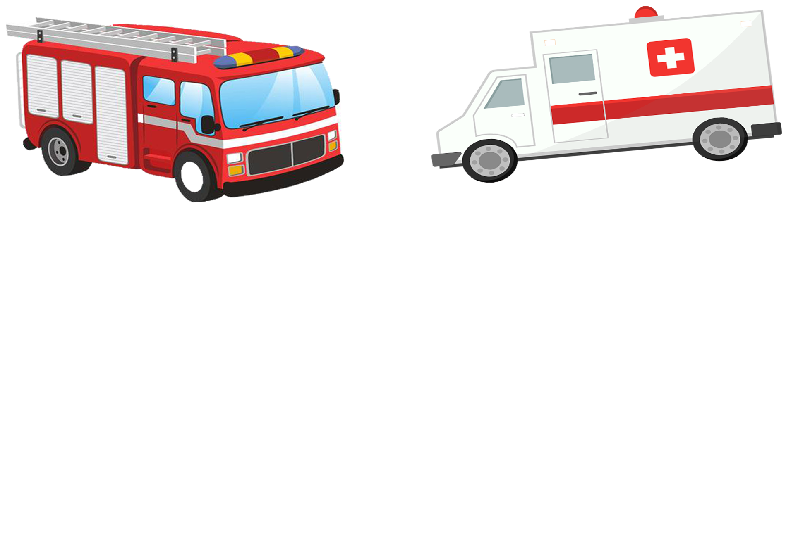
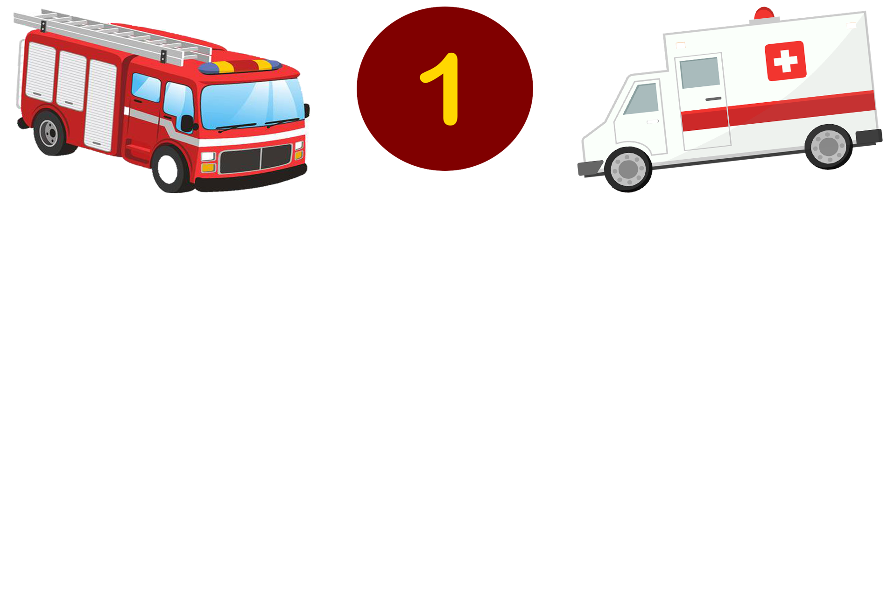
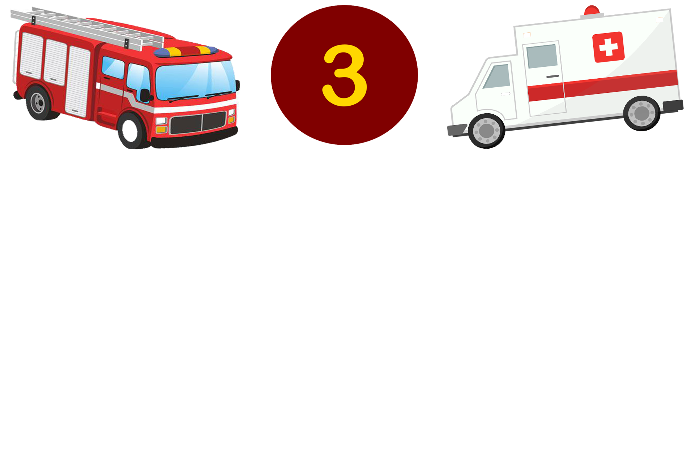
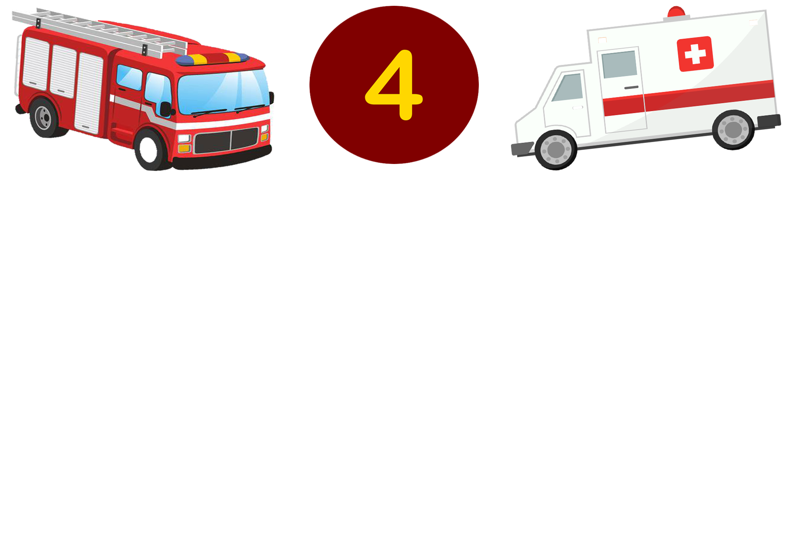

What to do during Fire?
1 / 4

Immediately pull the nearest fire alarm pull station as you exit the building.
2 / 4
When evacuating the building, be sure to feel doors for heat before opening them to be sure there is no fire danger on the other side.
3 / 4

If there is smoke in the air, stay low to the ground, especially your head, to reduce inhalation exposure. Keep on hand on the wall to prevent disorientation and crawl to the nearest exit. Once away and clear from danger, call your report contact and inform them of the fire.
4 / 4

Go to your safe area and await further instructions from emergency personnel
❮
❯